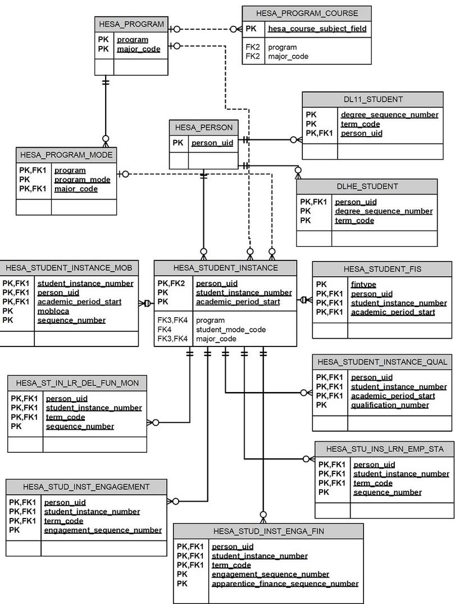
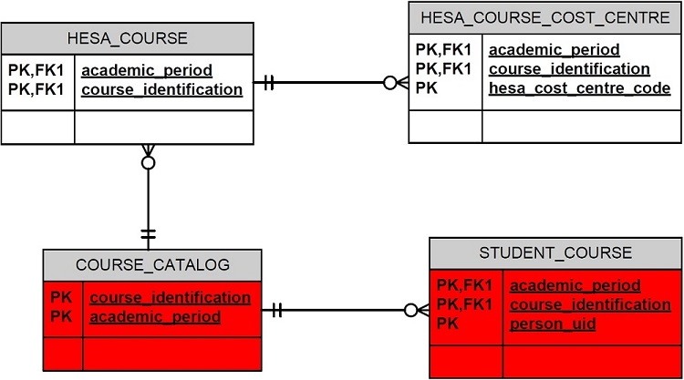
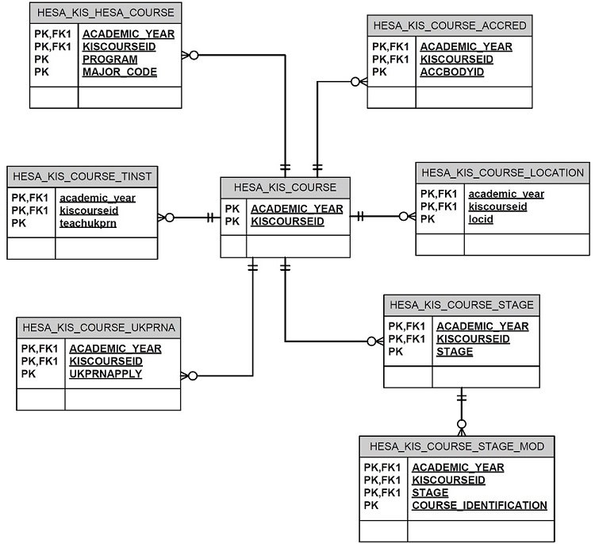
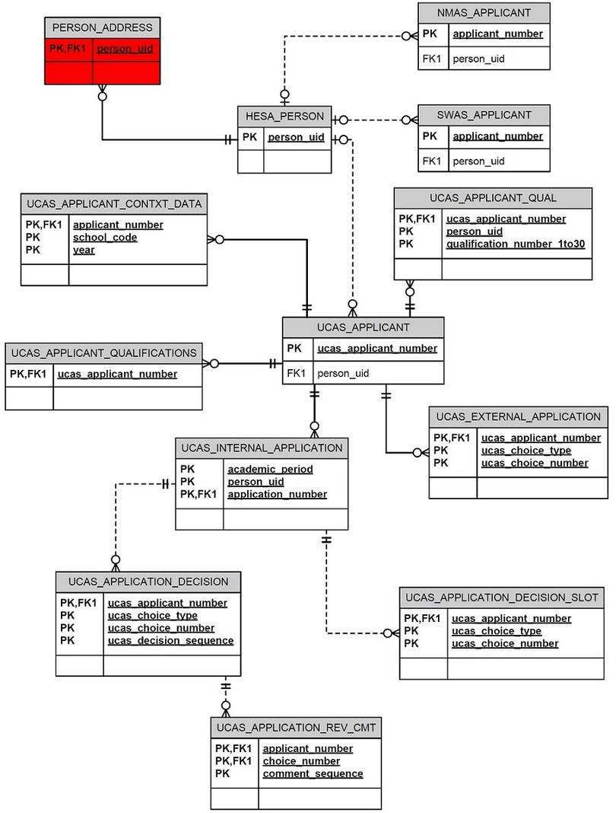
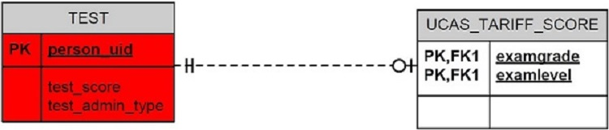

Introduction
The Banner® Operational Data Store (Banner ODS) enables you to extract information from your source administrative systems and reorganize that information into a simplified set of tables and views in the Banner ODS database. End-users can then create and deploy operational and adhoc reports on this information.
This 9x version corresponds to the Banner ODSUK 8.8 release version.
Banner ODS provides an extensive and flexible data store and business-organized reporting views with fewer columns and improved performance. You can use these views alone or in combination with other views when producing reports.
Using this solution, your institution can take full advantage of the data stored in your source system by turning it into applied knowledge that can help you make informed decisions, guide strategic institutional planning and forecasting based on analysis of historical trends, and enhance institutional performance.
Banner ODS for the UK (ODSUK) incorporates Banner UCAS and Banner HESA data structures allowing users to extract, transform, and load Banner UCAS and Banner HESA data into the ODS database.
This documentation provides details about the objects that are delivered with ODSUK. This content assumes that you have a working knowledge of ODS. If you need more information about how to use Banner and ODS, see Related Documentation section.
The ODSUK tables and views use Banner naming conventions. For example, tables and views that include 'PROGRAM' in the title relate to the Banner Program entity that is equivalent to the HESA Course entity, and tables and views that include 'COURSE' in the title relate to the Banner Course entity that equates to the HESA Module entity. For example, AS_HESA_PROGRAM and MST_HESA_PROGRAM contain data relating to Banner Programs / HESA Courses.
Related Documentation
Prerequisites
The minimum required releases for Banner ODSUK 9.0 are listed below.
- Banner ODS 9.0
- Banner ODSUK 8.8
- Banner HESA 8.14 or higher
- Banner UCAS 8.10 or higher
- Banner General 8.6
- Banner Student 8.6.2 or higher
- DBEU
- Target Oracle Database 11.2.0.4, 12.1.0.0, or 12.1.0.2
- Source Oracle Database 11.2.0.4
- Java: 1.8.0_60 or higher
- ODI EE product: ODI 12.2.1
- MDUU 8.0 or higher. If you are not running 8.1, Ellucian recommends applying the following patches: p1-hwx5vn_mduu8000006, p1-mgpqll_mduu8000001, p1-c3qzdt_mduu8000002, p1-108vy7i_mduu8000003, p1-156f9lt_mduu8000004, p1-16vnsdi_mduu8000005.
Administrative User Interface
Options in the Administrative User Interface (UI) enable you to easily perform the tasks required to set up and maintain the UCAS and HESA elements of Banner ODS for the UK (ODSUK) at your institution.
It is assumed that you are familiar with baseline ODS functionality. For complete information about the ODS UI, refer to the Administrative User Interface section of the Banner Operational Data Store Use.
Staging and data replication
Materialized Views architecture is used for staging data in Banner ODSUK.
Banner HESA and Banner UCAS staging tables are included in the Student Refresh Group collection when using the Refresh Staging Collections feature in the Administrative UI.
Individual Banner HESA and Banner UCAS staging tables can be refreshed using the Refresh Staging Tables feature in the Administrative UI.
Set up and synchronize data
Maintaining current data in Banner ODS is key to producing accurate reports. ODS uses programs (Oracle Warehouse Builder (OWB) mappings) to associate elements in the administrative system with their corresponding elements in ODS.
When you run a job (that is, schedule a process using the Administrative UI), it calls the related mappings and loads or updates the data defined by them.
ODS includes the following main categories of mappings.
- LOAD mappings load data from the administrative system into ODS. These mapping names include a LOAD_ prefix.
- REFRESH mappings update ODS with data that has changed in the administrative system. These mapping names include an UPDATE_ or DELETE_ prefix. Typically, these mappings exist in pairs. To perform a complete refresh, you run the DELETE mapping followed by its associated UPDATE mapping.
ODSUK is delivered with a number of mappings already defined. LOAD and REFRESH mappings exist for each UCAS and HESA composite table in ODS. To make it easier to work with the mappings, they are organized into groups by product area. You can run one job that includes a group of mappings at the same time, such as UCAS-related mappings, or you can run a single mapping.
Schedule a process
You can schedule a job to run at a specific time.
To run load and refresh (update) jobs, select Schedule a Process on the Options menu of the Administrative UI.
Load Banner UCAS and HESA data in ODSUK
Metadata
Metadata is 'data about data', or information and characteristics about data entities such as a column name, description, format, length, origin, and destination.
Metadata in ODS provides the following types of information:
- Data columns in ODS
- Definition of each data column's business use
- Type of data (number, character, date, and so on)
- How long the data column is
- Where in the source system the data column comes from
- Data column's destination in the target system
ODSUK includes metadata describing the reporting views and the sources from which they are extracted
From the subject area drop-down in the Administrative UI, select the UCAS or HESA option to view the metadata for that area. The metadata can then be viewed online or it can be output to an HTML file.
For complete information about ODS metadata, refer to the Meta Data section under Administrative User Interface in the Banner Operational Data Store Use.
For more details on the metadata and business concepts, refer to the flow diagrams in the sections that follow.
HESA Business Concept - Part 1
The figure shows the HESA Business Concept.

HESA Business Concept - Part 2
The figure shows the HESA Business Concept.

HESA KIS Business Concept
The figure shows the HESA KIS Business Concept.

UCAS Business Concept - Part 1
The figure shows the UCAS Business Concept.

UCAS Business Concept - Part 2
The figure shows the UCAS Business Concept.

Reporting Views
HESA and UCAS data from your source system database is used to populate Banner ODS composite tables. This data can be retrieved in reports using the ODS reporting views.
Use the Administrative User Interface (UI) to maintain and view metadata reports for each composite view (data on the source system used as an intermediate step to produce the composite tables and reporting views) and reporting view.
The meta data reports enable you to look at the information about the composite or reporting view definition, and the column business definitions by either target, composite or reporting view, or by source administrative system sources.
For additional information on how to view meta data for the composite views or reporting views, refer to Composite View Meta Data under Administrative User Interface in the Banner Operational Data Store Use.
For additional information on how to maintain meta data for the composite or reporting views, and to maintain sources and source columns, refer to Meta Data under Administrative User Interface in the Banner Operational Data Store Use.
The sections that follow provide information about the Banner HESA and Banner UCAS reporting views included in Banner ODSUK).
HESA reporting views
The following table describes the HESA reporting views.
| View Name | Description |
|---|---|
| HESA Destination of Leavers (DL11_STUDENT) | This reporting view contains data about student destinations for the HESA DLHE collection of 2011/12 and later. |
| DLHE Student (DLHE_STUDENT) | This reporting view contains data about student destinations for the HESA DLHE collection earlier than 2011/12. |
| HESA Course (HESA_COURSE) | This reporting view contains HESA supplementary details for a subject (course) offered as part of the instruction in an academic study program. Details tracked are specific to each academic period for which the subject could be offered. |
| HESA Course Cost Centre Information (HESA_COURSE_COST_CENTRE) | This reporting view contains HESA course cost centres associated with each relevant Banner catalog course. |
| HESA KIS Course (HESA_KIS_COURSE) | This reporting view contains data about each Key Information Set (KIS) course. |
| HESA KIS Course Accreditation (HESA_KIS_COURSE_ACCRED) | This reporting view contains accreditation data about each HESA KIS course. |
| HESA KIS Course Location (HESA_KIS_COURSE_LOCATION) | This reporting view contains data about the HESA courses associated with this KIS course. |
| HESA KIS Course Stage Details (HESA_KIS_COURSE_STAGE) | This reporting view contains data about the stages of each HESA KIS course. |
| HESA KIS Course Stage Module (HESA_KIS_COURSE_STAGE_MOD) | This reporting view contains study module data about each HESA KIS course stage. |
| HESA KIS Course Teaching Institution (HESA_KIS_COURSE_TINST) | This reporting view contains data about the Teaching Institutions associated with the KIS course. |
| HESA KIS Course Application UKPRN Details (HESA_KIS_COURSE_UKPRNA) | This reporting view contains UK Provider Reference Number (UKPRN) data for each KIS course. |
| HESA KIS HESA Course Details (HESA_KIS_HESA_COURSE) | This reporting view contains data about the HESA Course for each KIS course. |
| HESA Person Information (HESA_PERSON) | This reporting view contains one row of supplemental data per Banner person. Supplemental person data is shared between HESA and UCAS to avoid repetition. Both HESA and UCAS data are included in this view. |
| HESA Program (HESA_PROGRAM) | This reporting view contains HESA supplementary details for an academic study program. Details tracked are specific to each academic period for which the program could be offered. |
| HESA Program Course (HESA_PROGRAM_COURSE) | This reporting view contains a list of subjects (courses) offered as part of the instruction in an academic study program. Details tracked are specific to each academic period for which the subject could be offered as part of the program. |
| HESA Program Mode (HESA_PROGRAM_MODE) | This reporting view contains details of study modes available for an academic study program. Details tracked are specific to each academic period for which the study mode is available for the program. |
| HESA Student Instance (HESA_STUDENT_INSTANCE) | This reporting view contains HESA supplementary details for each instance of study undertaken by a student at the institution. Details tracked are specific to each academic period in which the student is studying. |
| HESA Instance Financial Support (HESA_STUDENT_INSTANCE_FIS) | This reporting view contains data about the financial support arrangements for each instance. |
| HESA Instance Year Mobility (HESA_STUDENT_INSTANCE_MOB) | This reporting view contains data about student instance mobility experiences. |
| HESA Student Instance Qualification (HESA_STUDENT_INSTANCE_QUAL) | This reporting view contains entry qualification details for each instance of study undertaken by a student at the institution. |
| HESA Instance Learner Delivery Funding and Monitoring ( HESA_ST_IN_LR_DEL_FUN_MON ) |
This reporting view contains Learner Delivery Funding and Monitoring for each instance |
| HESA Student Instance Engagement (HESA_STUD_INST_ENGAGEMENT ) |
This reporting view contains student engagement for each instance |
| HESA Instance Engagement Finances (HESA_STUD_INST_ENGA_FIN ) |
This reporting view contains student finance engagement for each instance |
| HESA Instance Learner Employment Status (HESA_STU_INS_LRN_EMP_STA ) |
This reporting view contains learner employment status for each instance |
UCAS reporting views
The following table describes the UCAS reporting views.
| View Name | Description |
|---|---|
| UCAS NMAS Applicant (NMAS_APPLICANT) | This reporting view returns one row per UCAS applicant number and contains data specific to an NMAS type of applicant, that is, it includes only applicants where the UCAS_APPLICANT_TYPE = N. this view is no longer used, but is retained in the system for historical purposes. |
| UCAS SWAS Applicant (SWAS_APPLICANT) | This reporting view returns one row per UCAS applicant number and contains data specific to an SWAS type of applicant, that is, it includes only applicants where UCAS_APPLICANT_TYPE = S. this view is no longer used, but is retained in the system for historical purposes. |
| UCAS Applicant (UCAS_APPLICANT) | This reporting view returns one row per UCAS applicant number and contains common UCAS applicant data. This view is for all admissions systems. |
| UCAS Contextual School Data (UCAS_APPLICANT_CONTXT_DATA) | This reporting view contains contextual data about the schools that an applicant has attended, provided by UCAS. |
| UCAS Applicant *J Qualification Data (UCAS_APPLICANT_QUAL) | This reporting view returns one row per UCAS applicant number and qualification number and contains applicant *J Qualification data. This view is for all admissions systems. |
| UCAS UK Central Applicant Qualification Data (UCAS_APPLICANT_QUALIFICATIONS) | This reporting view returns one row per UCAS applicant number and contains qualification data for an applicant. |
| UCAS Application Decision (UCAS_APPLICATION_DECISION) | This reporting view returns one row per application per decision recorded for that application and contains data specific to an application decision. This view is for all admissions systems. |
| UCAS Application Decision History (UCAS_APPLICATION_DECISION_SLOT) | This reporting view returns one row per UCAS applicant number and choice number and contains data for the latest five decisions for that application. Slot 1 contains the most recent decision, slot 2 the next most recent, and so on. This view is for all admissions systems. |
| UCAS Review Group Actions (UCAS_APPLICATION_REV_CMT) | This reporting view contains the review group actions and associated comments stored against applicants in the Banner UCAS Application Review Centre. Review Group Actions can be set up to represent any stage of the admissions process, such as inviting for an interview, referring to a particular department, and so on. This view is for all admissions systems. |
| UCAS External Application (UCAS_EXTERNAL_APPLICATION) | This reporting view returns one row per applicant number and choice number and contains data specific to any application(s) submitted by the person through UCAS for an external institution. This view is for all admissions systems. |
| UCAS Internal Application (UCAS_INTERNAL_APPLICATION) | This reporting view returns one row per person per application number per academic period and contains data specific to any application(s), submitted by the person through UCAS for the internal institution. This view is for all admissions systems. |
| UCAS Tariff Score Reference (UCAS_TARIFF_SCORE) | This reporting view returns one row per exam level and exam grade, and contains the tariff score for the exam level and exam grade. |